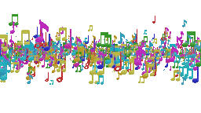
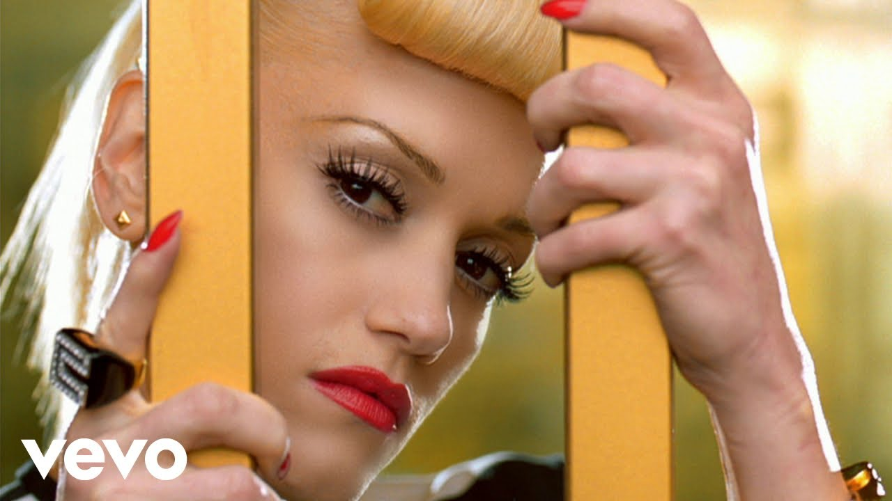
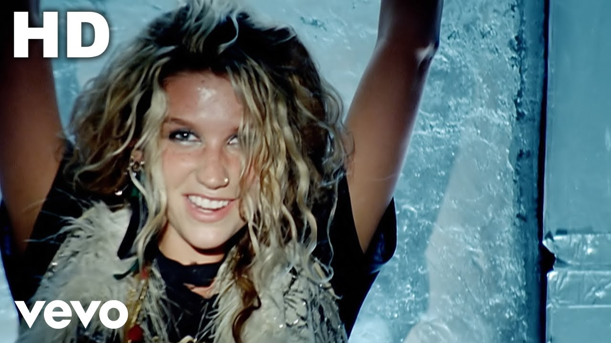
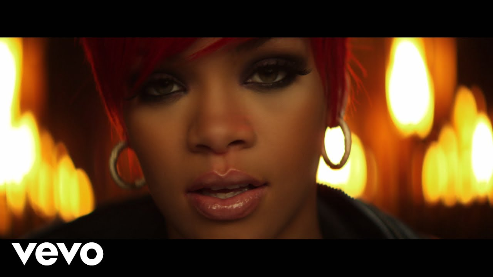
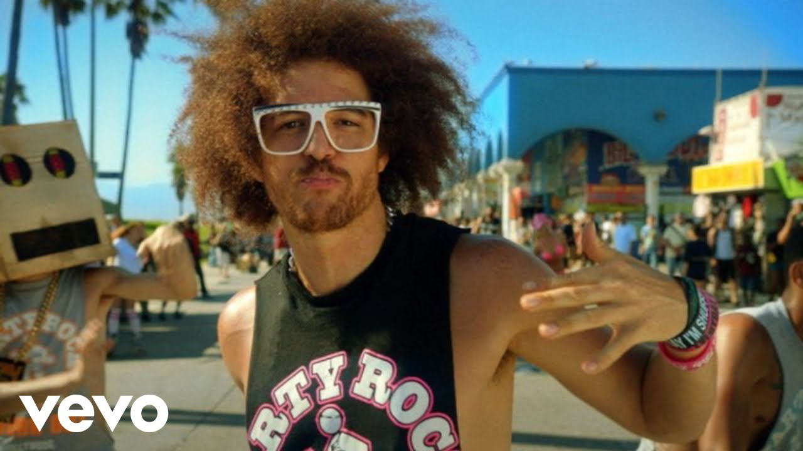
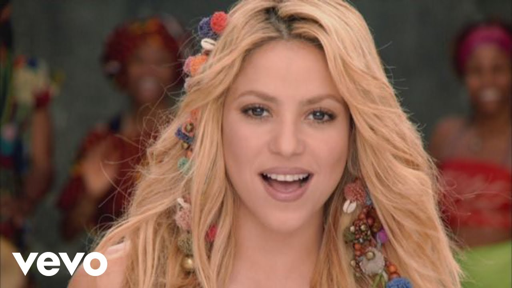

It was 2010, and I was only 4. I recall watching YouTube videos on my iPod, specifically music videos. My clearest memories involve Kesha's TiK ToK music video (which was actually released in 2009 but I'm counting it as early 2010s...), as well as Lady Gaga's Telephone music video which featured Beyonce. Aside from these two, I would also obsessively watch Gwen Stefani's Hollaback Girl and Sweet Escape videos, but these are from the early 2000s. I think the reason why these specific videos stayed ingrained in my brain from childhood is because of how much more vibrant videos like these were back then. I think artists were more inventive and creative during these years when the internet was more relatively new.

Gwen Stefani - The Sweet Escape ft. Akon
Ke$ha - TiK ToK (Official HD Video)


Here are some honorable mentions of early 2010s songs that would play on a loop when I first got my iPod: